Why make a scraper bot?
Having up-to-date wine inventories and prices is critical for my app! I need a way to execute scheduled scrapes that is more reliable than me remembering to.
I found Simon Willison’s fantastic blog while researching for a solution! He explains how to schedule a workflow to trigger at some time (e.g., weekly) and run a scrape. Check out his fantastic video explaining how he collects outage data from PG&E (an electric and gas company in California). This is useful since I would like to periodically scrape wine data.
This post will explain how I made my scraper to fetch data on a schedule. It could be modified for any task of yours that needs scheduling.
The blog goals
There are several bits and pieces that go into my final working bot. In this post, I will show how to:
- schedule workflows
- create, commit, push, pull, and delete branches
- use secret environment variables
- install modules and use python
- monitor your workflow for debugging
using GitHub Actions.
An extremely important phase of creating a GitHub Actions workflow is the observation phase. This is when you study and estimate the performance of your workflow such as the allocation of comptuational resources, scalability of your workflow, and whether you can satisfy your final business goals (e.g., my wine app). I talk about my frustrating (and humbling!) experiences creating a workflow at the end of the blog with the hope I save someone precious life mana.
DIY Web Scraper
What is GitHub Actions?
GitHub Actions is a platform to launch “workflows” with your GitHub repository. These workflows can be automated to build, test, and deploy your code directly from GitHub. Workflows can have create numerous jobs that run in parallel. They can also create temporary branches for testing your build’s functionality and performance.
There are great guides and documentation on GitHub Actions.
The strategy
In my three-part blog series, I describe three scrapers I wrote for the LCBO website. These scrapers obtain several thousands of data products as JSON files. I have one workflow executing each scraper along with a python script for post-processing. Each workflow performs the following sequence of actions (more or less in the same order):
- Wait for an event to trigger the workflow.
- Create a new branch.
- Go to the new branch.
- Run the scraping script.
- Install python modules and do python post-processing.
- Commit and push changes to the new branch.
- Go to the main branch.
- Pull new branch and then delete it.
Creating a temporary branch is very helpful when you are first starting to experiment with workflows. Your workflows will fail. Scripts will stop working. A temporary branch lets you run your script and inspect the results without threatening your main branch. I suggest ignoring steps 7 and 8 from the above sequence until you are confident with your workflow.
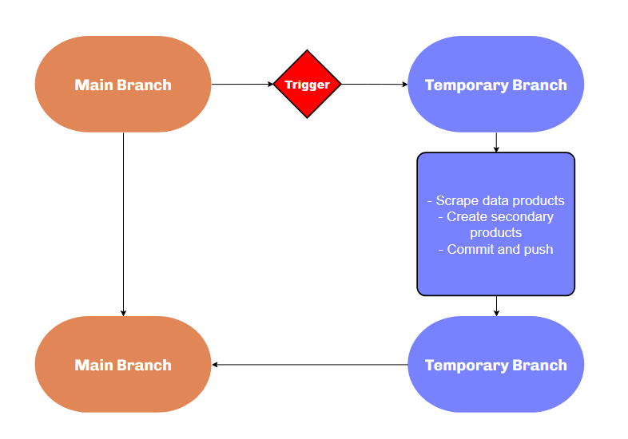
Workflow solution
Below is the strategy written as a workflow. The workflow is sequential, and each sequence is described in the rest of the blog.
name: Product Description Scraper
on:
push:
workflow_dispatch:
schedule:
- cron: '7 7,19 * * 0'
jobs:
my-job:
runs-on: ubuntu-latest
steps:
- name: Check out this repo
uses: actions/checkout@v3
- name: Create branch
run: |-
git config user.name "Automated"
git config user.email "actions@users.noreply.github.com"
git checkout -b workflow_products_output_singlejob
git push -u origin workflow_products_output_singlejob
- name: Check out this repo
uses: actions/checkout@v3
with:
ref: workflow_products_output_singlejob
- name: Fetch latest data.
run: |-
chmod +x code/all_product_request.sh
sudo ./code/all_product_request.sh
shell: bash
- name: Install python modules. Upload to Autovino server.
env:
AUTOVINO_KEY: ${{secrets.AUTOVINO_KEY}}
run: |-
python -m pip install --upgrade pip
pip install -r code/requirements/requirements.txt
python code/create_master_json_and_skulist_txt.py
python code/updateTables.py prices
shell: bash
- name: Commit and push if it changed
run: |-
git config user.name "Automated"
git config user.email "actions@users.noreply.github.com"
git branch
git pull
git add json/*
timestamp=$(date -u)
git commit -m "Latest data: ${timestamp}" || exit 0
git push
- name: Check out this repo
uses: actions/checkout@v3
with:
ref: main
- name: Commit and push if it changed
run: |-
git config user.name "Automated"
git config user.email "actions@users.noreply.github.com"
git config pull.rebase true
git pull --allow-unrelated-histories origin workflow_products_output_singlejob
git push origin main
git push origin --delete workflow_products_output_singlejobWorkflows can have a steep learning curve! I strongly encourage workflow experimentation and debugging to be done in a separate branch and not in main.
My workflow will crash because GitHub Actions does not have read/write permissions by default. Go to Settings > Actions-General > Workflow permissions, select Read and write permissions, select Allow GitHub Actions to create and approve pull requests, and save. 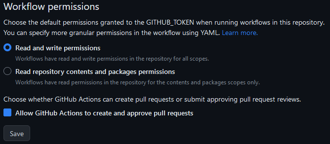
The YAML
I suggest creating a new private github repository to follow along. You can save the upcoming workflow snippets to your workflows directory and follow along. Workflows must must exist in this directory:
.github/workflows/Name and events (Part 1)
Workflows are written in YAML (*yml), begin with a name (e.g., “Product Description Scraper”), and a list of triggers:
name: Product Description Scraper
on:
push:
workflow_dispatch:
schedule:
- cron: '7 7,19 * * 0'This workflow is triggered when one of three events types occur:
- push: a push to the branch has been made.
- workflow_dispatch: a manually activated trigger (see below).
- schedule: a scheduled event occurs 1.
See this list of all other event types.
After saving the above workflow to your repository, go to the Actions tab. There, you can monitor your workflow. Any YAML files in your workflow directory will be displayed in this tab.
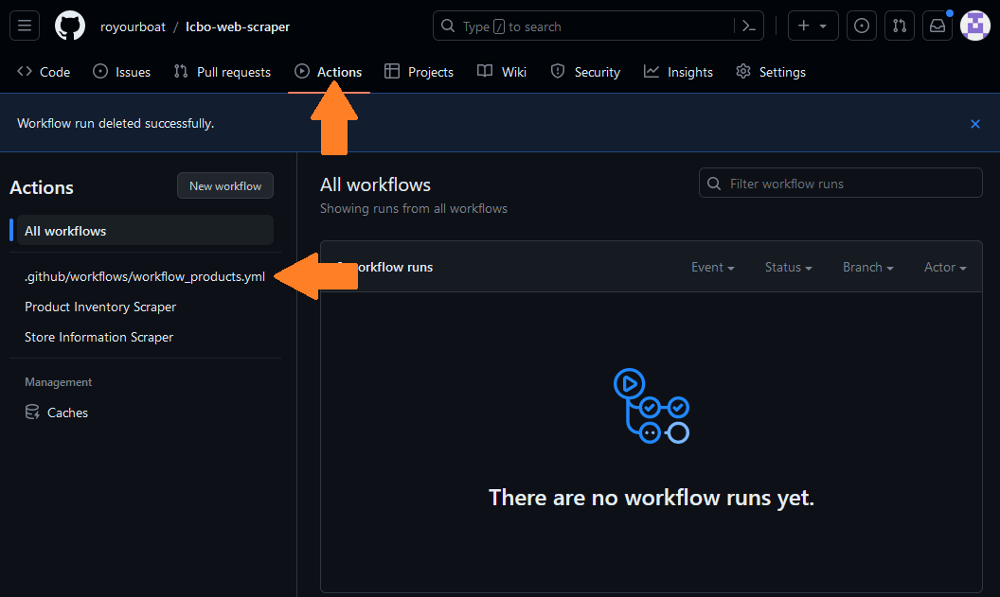
Unfortunately, the workflow is not executable because it is incomplete. The YAML file is shown by its filename rather than the workflow name. We need to provide a job with at least one step. Append the following code, save, and refresh the workflow monitor.
jobs:
my-job:
runs-on: ubuntu-latest #choose an OS
steps:
- name: Check out this repo
uses: actions/checkout@v3You should see the label change from your filename to the name “Product Description Scraper”. 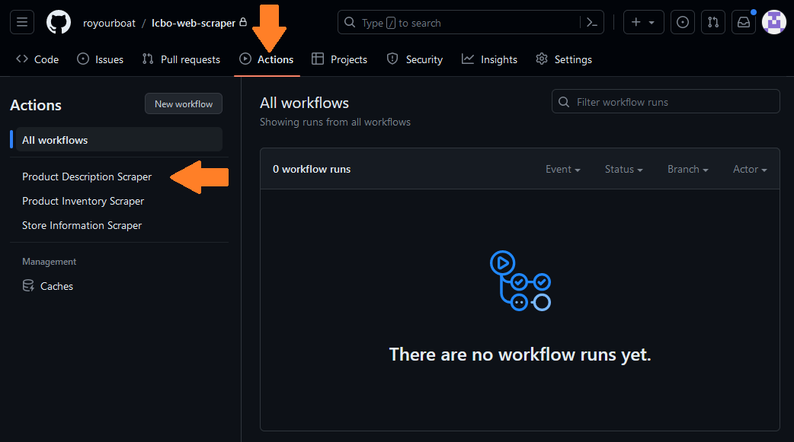
A Run workflow button is available because the workflow_dispatch event is included as a trigger. This button does not display by default.
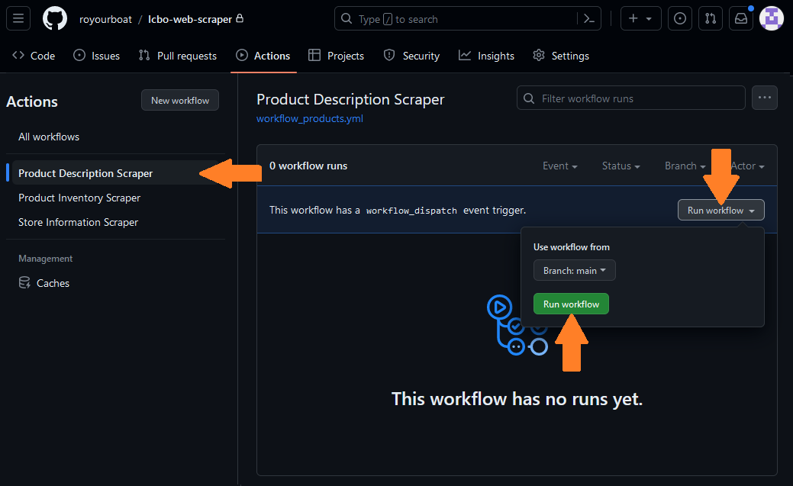
Try clicking on the Run workflow trigger! I will talk more the display below.
Jobs (Part 2)
Workflows execute jobs. Jobs are sent to a queue and are picked up by “runners”. Runners are machines that will execute your job when not busy. Let’s look at the first few steps in my workflow’s job called my-job.
jobs:
my-job:
runs-on: ubuntu-latest #choose an OS
steps:
- name: Check out this repo
uses: actions/checkout@v3Here, I specify needing a runner using ubuntu-latest (i.e., Ubuntu 22.04). A list of OSs can be found here. Runners using Windows and macOS cost 2x and 10x more computing minutes than Linux (ref)!
A job contains a sequence of tasks called steps. Each step has a label called name. My first step uses a pre-built action called CheckoutV3 which “checks out” my respository, specifically the main branch by default. This lets me access and do things with the repository. This action is available in a GitHub Actions Marketplace where authors host free or paid actions for others to use in their workflow!
I need CheckoutV3 so I can duplicate the main branch. This is done in the step below.
Create a branch and web scrape (Part 3)
- name: Create branch
run: |-
git config user.name "Automated"
git config user.email "actions@users.noreply.github.com"
git checkout -b workflow_products_output_singlejob
git push -u origin workflow_products_output_singlejobThe first two commands git config specify the username and email, so git can report who is messing around and how to contact them. Next, I create a new branch with git checkout -b and name the branch “workflow_products_output_singlejob”. I then upload the repository I am “checking out” (main) to the newly created one (workflow_products_output_singlejob) using git push. The following -u origin workflow_products_output_singlejob option lets me later use git pull without ambiguity.
I use CheckoutV3 again to check out the new branch I made. In this new branch, I execute the scraping script to collect new data products.
- name: Check out this repo
uses: actions/checkout@v3
with:
ref: workflow_products_output_singlejob
- name: Fetch latest data.
run: |-
chmod +x code/all_product_request.sh
sudo ./code/all_product_request.sh
shell: bashThe goal is to create a functioning workflow first. Do not start scraping the entire catalog while constructing and debugging your workflow. Try scraping a couple products max.
Get my secret key and do python (Part 4)
I need to process the raw data products before uploading them to my postgreSQL data base. I use a python script which needs the modules listed in requirements.txt. The first python script processes the raw JSONS and combines them into a single JSON with new features. The second script updates tables in my postgreSQL database.
- name: Install python modules. Upload to Autovino server.
env:
AUTOVINO_KEY: ${{secrets.AUTOVINO_KEY}}
run: |-
python -m pip install --upgrade pip
pip install -r code/requirements/requirements.txt
python code/create_master_json_and_skulist_txt.py
python code/updateTables.py prices
shell: bashThe external URL for my postgreSQL database is protected! GitHub lets you create secret keys that is hidden from the public and accessible to your environment. I define an environment variable AUTOVINO_KEY to be my secret key secrets.AUTOVINO_KEY with my database’s external URL. This key is read in my python script using
AUTOVINO_KEY = os.environ['AUTOVINO_KEY']Wrap it up (Part 5)
The remaining steps are straightforward. I add the json folder containing the data files, commit, and push to the new branch. I switch to (or “check out”) the main branch and pull the new branch before deleting it.
- name: Commit and push if it changed
run: |-
git config user.name "Automated"
git config user.email "actions@users.noreply.github.com"
git branch
git pull
git add json/*
timestamp=$(date -u)
git commit -m "Latest data: ${timestamp}" || exit 0
git push
- name: Check out this repo
uses: actions/checkout@v3
with:
ref: main
- name: Commit and push if it changed
run: |-
git config user.name "Automated"
git config user.email "actions@users.noreply.github.com"
git config pull.rebase true
git pull --allow-unrelated-histories origin workflow_products_output_singlejob
git push origin main
git push origin --delete workflow_products_output_singlejobThat’s it! That’s the workflow behind my scraper bot.
Tips:
- If a workflow fails after a new branch is created, the new branch will continue to exist. You must delete this branch before running another workflow.
- If you do NOT want to save the raw or processed data (because they are uploaded to your database) then you simply delete the branch after you have what you need.
Workflow Monitor
The monitor is vital to debugging your workflow. Try dispatching the workflow now. You can see it added to queue under your Actions tab. The orange circle indicates the workflow is in queue or running.
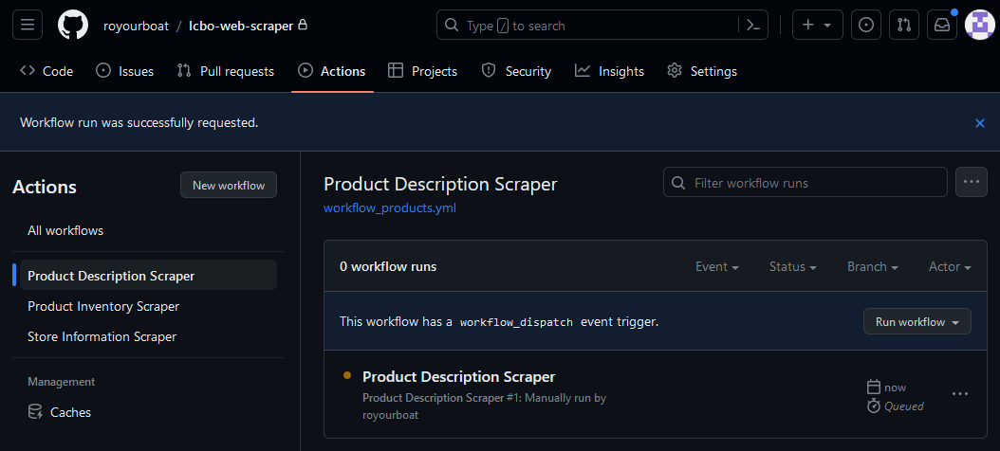
When a workflow fails, the indicator becomes a crossed red circle. You can setup notifications settings to receive an email when this occurs in case things fail unexpectedly.
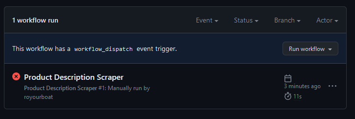
We can inspect the failure by clicking on the workflow to show a GUI diagram of the jobs requested. Here, “job_0” is my-job in the workflow script. The GUI can have a graph of connecting jobs and lets you zoom in and out. My script only has one job!
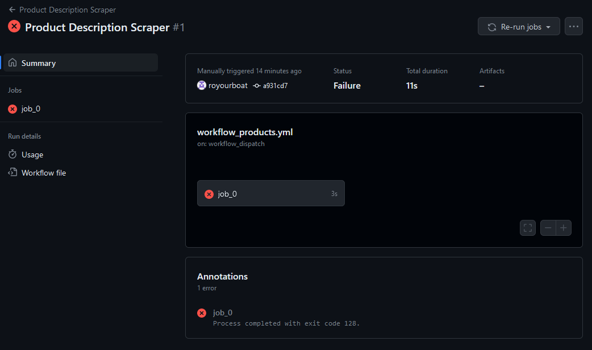
Clicking on the job shows a list of steps with names we defined using name. We can inspect each step and see whether they performed as desired. The failure here is “remote: Write access to repository not granted.” This is because I skipped my warning about giving GitHub Actions read and write permissions. As a result, a new branch was not created and the workflow shut down.
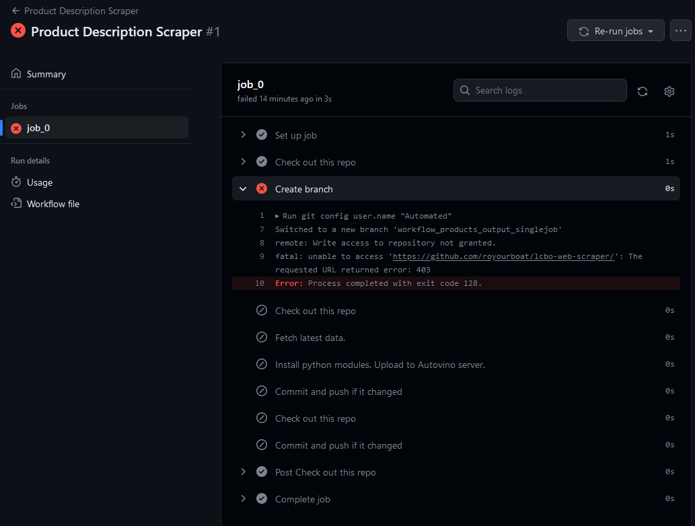
Observation
The observation phase is when you study the performance of your workflow. This is an extremely important phase of your workflow development and can require a lot of attention. The reason is there may be bottlenecks, unexpected behaviours, and substantial expenses you were not expecting. These issues can require a rethink of your entire workflow.
Questions I asked myself at this phase:
- How long does a single workflow take?
- How many computational minutes were spent? (I was very alarmed!)
- Are there bottlenecks? Is that expected?
- Are all the desired tasks completed? How do I know?
- Is my workflow scalable?
- How often can I run my scraper?
Also, do not forget about the GitHub Actions Marketplace. There may be fast and effective solutions there for free. Don’t reinvent the toilet! (That’s a compliment. Flush toilets are amazing inventions.)
Lessons in failure
The Matrix
My original ambition for my workflow was to make it fast. Create dozens of jobs. Execute a cluster of scrape commands for each job. Go forth, my minions! Pillage the servers!
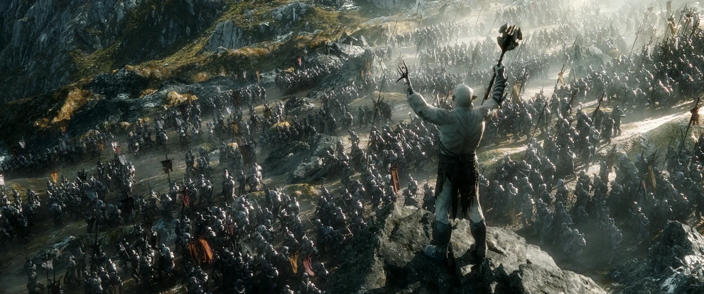
Not only was this strategy greedy and unnecessary, it took spectacular effort and cost 50x more minutes and computational resources! Here is why.
In GitHub Actions, you can execute a multitude of identical jobs where each job has a different parameter or initial value. These parameters come from a “matrix” (i.e., a list) of values. In my case, I wanted to assign a scraping job for each parameter in my matrix2. Feel free to read more about matrices here. You can specify the maximum number of jobs that run simultaneously too (ref).
After experimenting with the matrix strategy, it was clearly a very bad solution for several reasons:
- Defining a matrix that is more than one dimension causes hair loss.
- Constantly referring to these as matrices hurts me.
- If you have a list of unequal lists to query then too bad. A matrix must be a list of equal length lists. Elements that do not fit in the matrix must bad added as individual special scenarios. smile
- The minutes used for each job is rounded up and summed. That means 10 jobs that take 1 second each will cost 10 minutes. Meanwhile, 1 job that performs ten 1-second tasks will cost 1 minute.
The last reason was a complete shock to me. With all my scrapers, I could only afford one or two scrapings per month each! (You can see your usage in the workflows monitor or your GitHub settings under “Billing and plans”.)
I rewrote my entire workflow and wrote another bash script to loop over my list of queries. This led to a factor of 50x fewer minutes spent. The savings affords me to run more frequent workflows and have more up-to-date data.
Yes, the total time for each workflow is longer in series than in parallel. The headaches avoided from understanding and implementing matrices makes this completely worth it. Also, the scraping is much gentler on the servers too.
The Main Branch
In my mad dash for power, it had not occurred to me to create a separate branch where my scraping could be done. My original workflow ran in the main branch. Another silly decision was to commit and push after each scraping job when I implemented the matrix strategy. As a result, my main branch had a flurry of updates that prevented me from making separate commits of my own.
So, don’t do that. Create a temporary branch to play in and delete it when you’re done.
Conclusion
Learning GitHub Actions was quite intimidating for me. There were a lot of failures and trial-and-error. But, I found this to be a great exercise in synergizing my technical understanding of git, jobs, bash, and computing. On a broader sense, GitHub Actions let me practice how to calculate and manage my computational resources effectively, and define the minimum core features necessary for my app to succeed.
Footnotes
I use “crontab guru” to make a cron schedule. For example, ‘7 7,19 * * 0’ corresponds to Sundays at 7:07 am and pm. 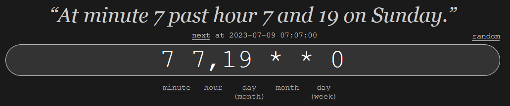↩︎
I am not a fan of the term “matrix”. Not one bit.↩︎
Citation
@online{ro2023,
author = {Ro, Stephen},
title = {Making My Own Scraper Bot!},
date = {2023-06-22},
url = {https://royourboat.github.io/posts/2023-06-22-lcbo-github-actions-bot/},
langid = {en}
}